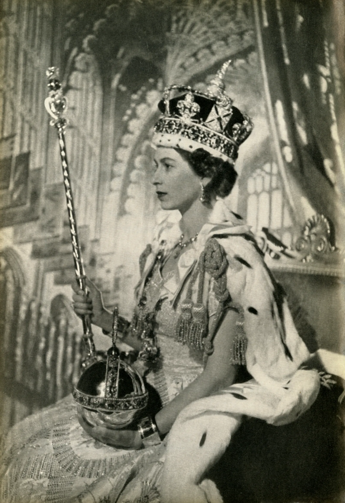

A obscura história verdadeira por
trás da coroação do rei Carlos III
De rebeliões e tentativas de roubo, a Coroa de Santo Eduardo
é um dos artefatos mais icônicos da Família Real
mas grande parte dela está envolta em mistério

As Joias da Coroa, 1953. A Coroa de Santo Eduardo, usada para coroar os monarcas ingleses e
britânicos
em suas coroações desde o século 13, e o Cetro do Soberano. Da lembrança da coroação da rainha
Elizabeth.
[Londres, 1953]
